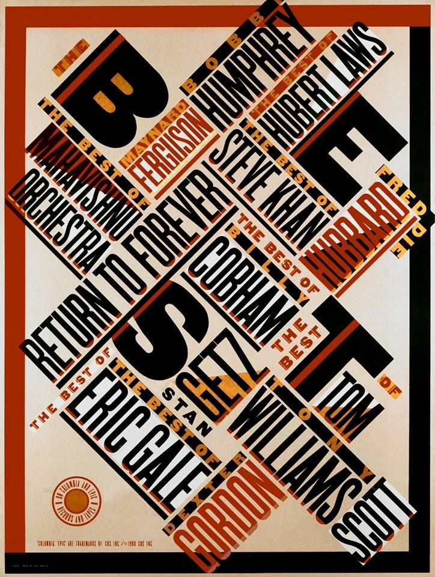

INTRO
Paula Scher is known to be one of the most highly acclaimed graphic designers in the modern world. Scher is highly influenced by Art Deco and Russian Constructivism, which is seen throughout her designs. She is well-known for her branding and identity designs. Throughout the many years designing for many brands and managing her own company, while educating the world the art of graphic design, Scher has made a remarkable difference for Art and Design and has influenced many.
TIMELINE
The 1970s
In 1970, after graduating from the Tyler School of Graphic Design, Scher first started her career in graphic design, in the City of New York. This is when she first started to work for 'Random House', where she designed layouts of children's books. Years after this, Scher designed one of her first-ever album covers, 'The Boston' album cover, for her job as an art director at Atlantic Records. This is an early example of her first typographical work. This album cover expressed her interest in inter-fusing her like for pop culture and experimental typography. This iconic album cover is very successful to this day, 40 years later. This experimental approach became Scher's inspiration for many of her works later in life, especially in the 1990s. After her success with the album cover, she went on to create over 150 albums covers each year, for 8 years while working with CBS Records, at the age of 25.

The 1980s
In 1982, Scher started experimenting with typography and focussing on illustrative imagery, after leaving CBS Records. To influence her typography, Scher used inspiration from Russian Constructivism, making her work very much abstract and experimental. At the time, her posters and other works consisted of bold colours such as yellows and reds and photomontages, while using a big, blocky typeface, known as 'Agency Gothic'. In 1984, Scher and Terry Koppel partnered up and established a new design studio, named 'Koppel & Scher'. Scher wanted to experience having her own clients and the challenges and pressures of owning her own business, to help her grow as a professional and experienced designer. Within this time Scher designed advertisements, packaging, and iconic posters for her clients, such as The New York Times, Tiffany & Co, and GQ. One of these posters was the 'Swatch' poster, which was created for Swatch watches, at the time.
The 1990s
In 1991, Scher became the first-ever female to be given the principal position at the Pentagram. The Pentagram is a 'multi-disciplinary, independently-owned design studio' (Pentagram, n.d.). The designers within this group work hard to design products and packaging, websites, instalments, graphics, and exhibitions. The pentagram consists of 23 partners, who work together and independently. They are situated around the globe, such as in New York, London, and Berlin. Throughout her years working for Pentagram, the American designer, has produced iconic and revolutionary designs. These designs have been made for well known, famous brands and clients such as Microsoft, Disney, Coca-Cola, Adobe, the Museum of Modern Art, and the Metropolitan Opera. During these years, Scher became a very successful and well-known designer, winning many awards, including the Type Directors Club Medal, which she was the first ever women to receive the award and the Chrysler Award for Innovation, while also being named to the Art Directors Hall of Fame in 1998.
INSPIRATION
Originally Scher dreamt of being an illustrator, however she had doubts about her skill in drawing. Scher’s teacher, called Stanislaw Zagorski inspired her when she said, “illustrate with type’. “I realised type had spirit and could be differentiated depending on how it was drawn and that when you attached it to words, it gave them various meanings based on what you were looking at. That's where it began” (Cowan, 2019). Scher takes her inspiration from the designer, Seymour Chwast, an American graphic designer who is known for his illustrative work and advertising, who she then married at the age of 22 then divorced 5 years later. Scher has also been influenced by pop culture and in her early days designing she took a good deal of inspiration from album and CD covers.
MEMORABLE DESIGNS
Public Theatre
One of Scher’s most credited designs is the Bring In Da Noise, Bring in Da Funk poster, made in 1995, for The Public Theatre, while working with Pentagram. This design was best known for its ‘noisy’ style of typography, which is known as wood typeface, which seen throughout most of the Public Theatre’s Identity. This poster shows Scher love of using photomontage and bright flat colours in her work. The poster was inspired by Rob Ray Kelly’s American Wood Types and Victorian Theatre’s poster. As well as the poster, Scher also created Public Theatres logo and billboards. The public Theatre’s logo was designed in 1994, also using blocky wood type in capital letters. In 2005, the logo was redesigned by Scher, taking the ‘Theatre’ word out completely to give emphasis on the word ‘Public’.
Shakespeare in the Park
A famous series of work by Scher is the Shakespeare in the Park series, which she has been designing posters ever since 1994. This series is a campaign held by the Pentagram team and designed by Scher herself. The posters are to help promote the festival by The Public Theatre, which has been held every summer since 1994, till current. Scher was asked to create a graphic style that embodies street typography and graffiti, which would be included throughout her designs for Public Theatre. The 26th season and Scher’s most recent design for the series was released in the summer of 2021, called ‘Merry Wives’, a comic adaptation of Shakespeare's Merry Wives of Windsor. These bright, eccentric posters with the use of the Public Theatre’s identity typeface, Knockout, and lively colours was a beautiful success that truly gave the audience the ambiance of the playful and vibrant festival. In the past, one of her most prominent works from the Shakespeare series is the posters designed in 2007, for Public Theatre’s ‘Romeo and Juliet and Midsummer’s Night’s Dream’ and ‘Blade to the Heat’ in 1990.

Maps
As well as creating branding designs, Scher has also included paintings in her professional career, which is a series of maps. Scher began designing and painting her series of artistic maps in the 1990s. These paintings and drawings consist of very colourful and typographic maps from all over the world, including the US, India, Europe, and the world map. Scher presented her original 39 paintings, prints and sketches within the book, ‘MAPS’. The maps include hundreds of multi-layered, handwritten words, such as the places names and cultural annotations. At first glance, these maps seem some-what ordinary yet beautiful, however when looked at closely the typography can be seen on every inch of the maps, in all different directions, colours and sizes, therefore making the maps unique to her own style.
AN EDUCATOR
Not only has Scher been sharing her talent through her designs, but she has also done so through teaching and educating the public. Scher started teaching as a design educator at the School of Visual Arts in New York, 1992. While teaching at the school, in 2002, Scher received the ‘Masters Series Award’ given by the School of Visual Arts. For 20 years, Scher taught at the schools design department and made a great impact on the school and the students she taught. In 1992, she published a book called, ‘The Graphic Design Portfolio: How to Make A Good One’, which showcases works of her students throughout the years of the school. Scher also helped to educate at Yale University, the Tyler School of Art, and the Cooper Union. In her spare time, Scher has also shared her knowledge of design through talks and educational videos, such as the talk for 99U, called ‘Do What You’ve Never Done Before’. Within the talk Scher expressed how she came about designing the branding and identity for the Museum of Modern Art.
“When you don’t know anything it’s easy to discover stuff, and when you know a lot, it’s hard to make discoveries.” (Co., 2019)
CONCLUSION
Throughout Scher’s professional career, she has made countless revolutionary designs, influenced the world with her innovative ideas and help to educate many people in the design world. Although Scher hasn’t created an art movement like Saul Bass or created the iconic ‘I heart NY’ logo by Milton Glaser, she has truly changed the graphic design industry with her designs and has created a notable legacy to leave behind. We can all agree that she has given herself the name for one of the most influential designers of the century.